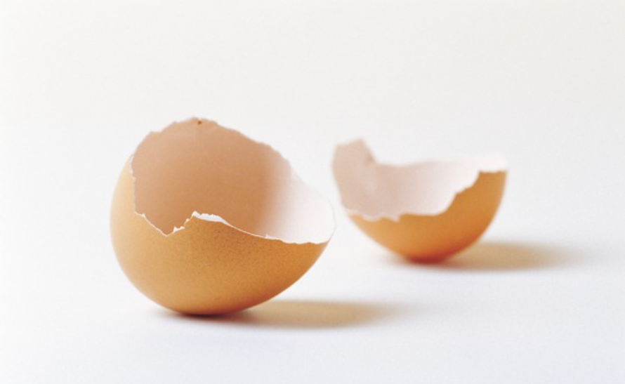
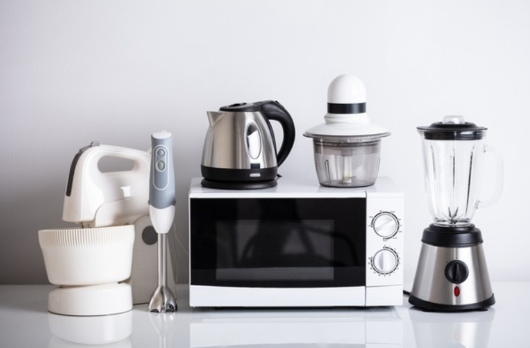

🏠 계란껍질버리기 어디에 버려야할까?
용인 하수구막힘 전문 시공 후기

📋 작업 개요
- 위치: 용인
- 서비스 유형: 하수구막힘, 배관청소, 고압세척
- 작업 일시: 2023. 3. 8. 9:06
- 업체명: 하수구수사대 (010-5615-2118)
🔍 문제 상황
안녕하세요. 하수구수사대 입니다.
오늘은 계란껍질버리기에 대해서 알아보도록 하겠습니다.
음식물 쓰레기는 한곳에 모여져 염분과 향신료를 제거한 뒤에 가축의 사료나 퇴비로 사용이 되고 있다고 합니다. 이때 이를 처리하는 과정에서는 가스가 배출이 된다고 합니다. 열에너지원으로 활용이 된다고도 하는데요.
음식물 쓰레기를 배출할 시에는 반드시 수분은 충분히 걸러낸 상태에서 배출을 하는 것이 가장 편리하고, 침출수 발생을 줄이는 방법이라고 합니다.
1인 가구인 경우에는 음식물 처리하는 것에 애로사항이 있다고 하는데요.

🔎 원인 분석
💡 전문가 진단: 오늘은 계란껍질버리기에 대해서 알아보도록 하겠습니다.
집안에서 나오는 음식물 쓰레기의 양이 적다 보니 모아놓은 뒤에 한 번에 배출하는 방식이 많아서 악취로 인해 많은 불편함을 느끼게 된다고 합니다. 집안에 배여버린 냄새로 인해서 음식물을 바로바로 배출하려고 하는 집도 있지만, 이는 쓰레기봉투를 낭비하게 되는 방법이라고 생각할 수 있습니다.
이런 경우들로 인해서 냉동실에 음식물 쓰레기를 보관하는 방법도 있지만 냉동실 안에 있는 위생들은 상당히 좋지 않은 부분에 들곤 합니다. 요즘에는 음식물 쓰레기 처리기와 같은 가전제품들이 많이 출시되고 있는 가운데 사용을 고민 중이라고 하신다면 제품을 본 후에 구매를 희망한다면 인터넷으로 주문하는 것을 추천드립니다.
음식물 쓰레기는 가공을 거친 뒤에 가축들의 가료로 쓰이는 것으로, 동물들이 삼키지 못하게 찌꺼기 들과 재사용의 가치가 없는 것들이라면 일반 쓰레기로 배출을 하여야 합니다. 음식물인 줄 알았지만 그렇지 않고 일반 쓰레기로 배출이 되어야 하는 음식들도 상당히 많이 존재하게 됩니다.
이런 경우는 의외로 많이 발생하게 됩니다.
일반 쓰레기와 음식물 쓰레기의 차이점에 대해 알려 드리겠습니다.

🔧 작업 과정
음식물 쓰레기란 식품이 생산과 유통 그리고 가공 등의 과정에서 생겨나는 쓰레기로 사람들이 먹고 남긴 음식을 찌꺼기라고 합니다. 일반 쓰레기는 단단한 견과류들의 껍질 부분이나, 가시 혹은 뼈, 어패류들의 껍질 그리고 단단한 씨앗 등이 존재합니다.
여기에서 이 두 가지 방법을 구분하는 법을 알고 있는 것이 제일 중요합니다. 제일 쉬운 방법으로는 동물이 먹을 수 있는 것인지에 대하여 생각을 해보는 것입니다. 동물이 먹을 수 있는 부드러운 류의 음식이 음식물 쓰레기가 되는 것이고, 동물이 먹거나 삼킬 수 없는 음식이 바로 일반 쓰레기가 되는 것입니다.
계란 껍데기는 어떤 방식으로 버리는 것일까요?
어떻게 처리를 해야 하는 것인가에 대해 정확하게 알려드리겠습니다. 계란 껍데기의 경우에는 일반 쓰레기로 배출을 하는 것이 가장 올바른 방법이라고 합니다. 이에서 마늘 껍질이나 양파껍질도 부드럽기는 하지만 일반 쓰레기로 배출이 되는 것이라고 합니다. 계란 껍데기를 버리기 전에 일상 속에서 어떤 도움을 주고 있는지에 대해 알아보겠습니다.
첫 번째는 닦기 어려운 병이나 믹서기를 청소할 때 가장 많은 도움을 줍니다. 물과 계란 껍데기를 믹서기에 넣고 갈아주게 된다면 믹서기의 칼날의 홈 부분까지도 말끔하게 청소를 할 수 있다고 합니다. 다른 방식으로는 세척이 어려운 병에 깨끗하게 세척한 계란 껍데기를 잘게 부순 후에 물과 함께 넣은 뒤 마구 흔들어 준다면 구석에 끼어있는 얼룩과 물때를 손쉽게 제거할 수 있습니다.
두 번째로는 김치의 신맛을 줄이는데 사용이 가능한 부분입니다. 김치의 신맛이 너무 강하게 느껴진다면 김치에 깨끗하게 세척한 계란 껍데기를 넣어준다면 김치의 신맛을 줄이는 데 도움을 준다고 합니다. 껍질 내에 있는 탄산 칼슘이 신맛을 중화시켜준다고 합니다.
세 번째로는 퇴비나 표백제 역할입니다. 믹서기에 곱게 갈아서 화분에다가 뿌려주게 된다면 천연으로 좋은 퇴비가 된다고 합니다. 다른 방법으로는 누렇게 변색된 옷에 깨끗이 씻은 계란 껍데기를 거즈나 세탁망 등에 넣어서 빨래를 한다면 표백 효과를 볼 수 있습니다.
마지막으로는 동물들의 사료 혹은 칼슘 보충 그리고 주방이나 욕실과 같은 물을 많이 사용하는 곳의 물때를 제거할 수 있습니다. 오늘은 이렇게 계란껍질버리기 전에 활용도 높은 방법으로 어떻게 사용을 할 수 있는지에 대해 알아보는 시간을 가져봤습니다.

✅ 작업 완료
계란껍질버리기에 대해
위에 알려드린 방법 중에 시도해 보시는 것을 추천드립니다.

⚠️ 하수구 배관 막힘 예방 및 관리 가이드
- ✅ 머리카락, 비닐, 물티슈 등 물에 분해되지 않는 이물질은 하수구 유입을 절대 금지해 주세요.
- ✅ 하수구 거름망을 씌우고 모여진 이물질은 주기적으로 쓰레기통에 바로 비워주셔야 합니다.
- ✅ 배관 노후가 심할 경우 이물질이 더 쉽게 걸리므로 주기적인 배관 세척(고압세척 등)을 권장합니다.
- ✅ 작업 후 1년 이내 재발 시 하수구수사대에서 무상 A/S 보증 서비스를 제공합니다.
💡 핵심 정리
- 확실한 장비 작업(내시경 점검 및 샤프트 스케일링)으로 원인을 뿌리 뽑습니다.
- 작업 후 1년 이내에 동일한 부위 재발 시 100% 무상 A/S 서비스를 보장합니다.
- 서울 · 경기 · 인천 전 지역에 24시간 언제든 긴급 출동할 수 있도록 항시 대기 중입니다.
❓ 자주 묻는 질문 (FAQ)
🚨 용인 하수구막힘 문제로 고민이신가요?
정확한 원인 진단과 확실한 시공으로 재발 없는 해결을 약속드립니다.
24시간 긴급 출동 | 서울 · 경기 · 인천 전지역 | 1년 내 재발 시 무상 A/S